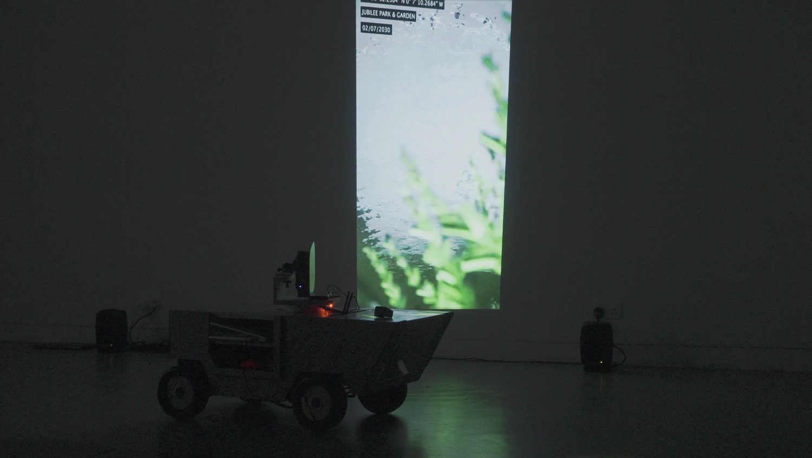
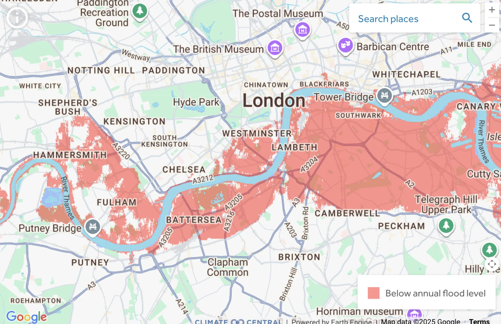
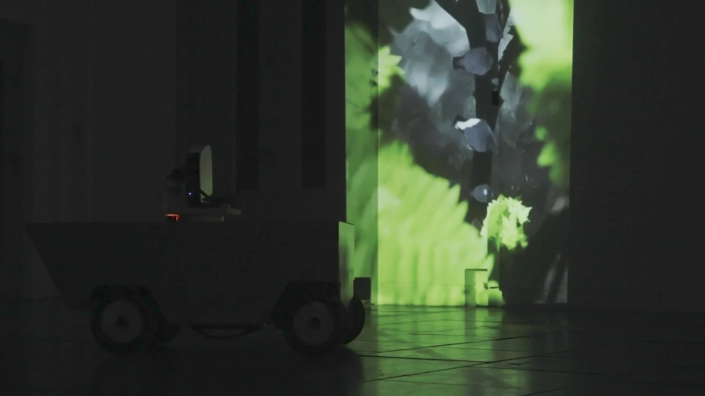
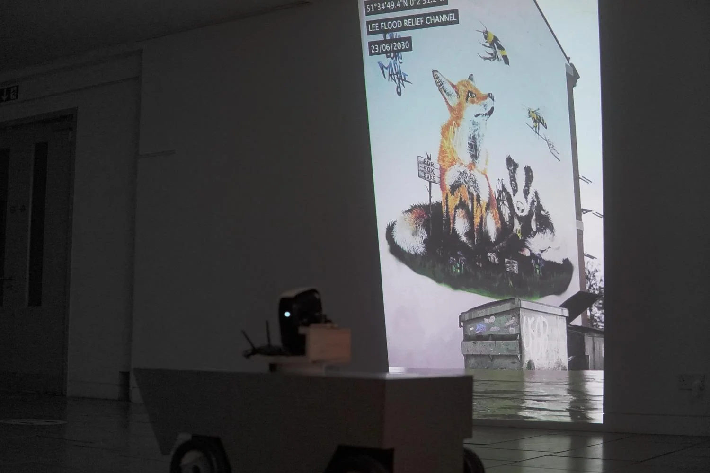
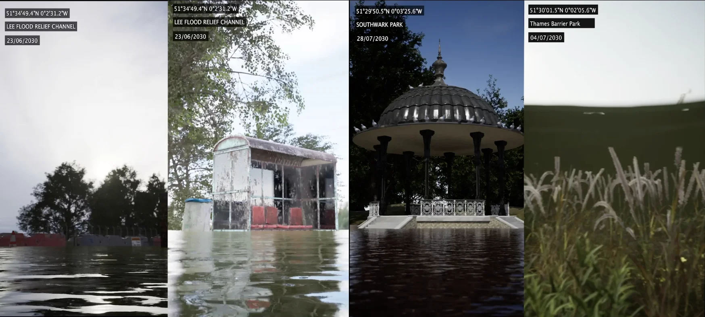

Amphibious Rover LDN2030 Scouting Log
Collaborative with Qing Qin, Yili Zhao, Yue Wang, Xinyun Huang

As being predicted by scientists, global climate change accelerates the sea level rise. In 2030, some areas of London along the Thames will be flooded. The Amphibious Rover LDN2030 are adopted for scouting several flooded locations in London, exploring these places that humans can no longer easily approach to. The scouting log reveals the possible hostile flooding environment in the near future that we may all have to face with.
On the interactive map of web page, you can check the mapping of the simulated land model after sea level rise in 2030 (Climate Central, 2021), which is based on the data provided by the Intergovernmental Panel on Climate Change (IPCC), the United Nations agency for evaluating science related to climate change in 2021.
Climate Central (2021) Coastal Risk Screening Tool. Available at: coastal.climatecentral.org (Accessed: 8 March 2022).



